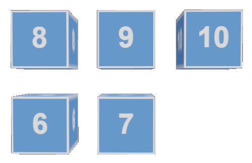
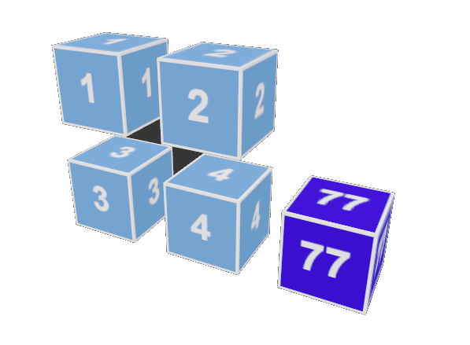

Descargar estos apunte en pdf o html
En esta unidad vamos a ver cómo organizar datos homogéneos en memoria de forma que podamos acceder a ellos de forma rápida y sencilla. Para ello, vamos a ver las tablas unidimensionales o arrays y también otros conceptos como índices, rangos etc. Además, veremos un caso típico de estructura multidimensional a través de las tablas dentadas o Jagged arrays.
Dichas estructuras nos permitirán almacenar un número indeterminado de datos del mismo tipo, de forma que podamos acceder a ellos de forma rápida, sencilla y eficiente. Además, vamos a poder encontrarlas en casi todos los lenguajes de programación como los tradicionales como C, C++, o los más modernos como Java, JavaScript, Python, C#, Kotlin etc.
Vemos pues los dos tipos de estructuras de tamaño fijo más usadas o comunes en la programación tradicional:
Es una organización de datos que se caracteriza porque todos los componentes con las siguiente características generales:
Caso 1: Definimos solo el tipo del array, aún no lo hemos instanciado en memoria, por lo que aún no podemos acceder a sus datos. En este caso, el array se define como un tipo de referencia y por tanto su valor será null hasta que lo instanciemos.
// Este objeto tabla referenciaría a null porque no se ha instanciado en memoria
// Solo estamos indicando el tipo de datos que va a contener.
<Tipo>[] <identificadorTabla>;
double[] v1;
double[] v1 = default;
Caso 2: Definimos el tipo del array y además lo instanciamos en memoria, es decir, reservamos espacio para él. En este caso, el array se define como un tipo de valor double y por tanto el contenido de cada 'celda' será 0.0D hasta que lo inicialicemos con un valor concreto.
// Este crearemos un objeto tabla con espacio en su interior para guardar númeroElementos del tipo definido.
// Los datos dentro del tipo tomarán el valor default para el tipo.
<Tipo>[] <identificadorTabla> = new <Tipo>[<númeroElementos>];
// Todos los datos valen 0.0D por ser double Type-safe y su valor 'default' ser ese.
double[] v2 = new double[4];
// ❌ ERROR al no definir el número de datos
double[] v2 = new double[];
Caso 3: Definimos el tipo del array, lo instanciamos en memoria y además le asignamos un valor a cada dato. En este caso, el array se define como un tipo de valor double y los datos dentro del array tomarán el valor que les asignemos.
// En este crearemos un objeto tabla con espacio en su interior para guardar númeroElementos
// y además estamos definiendo por extensión cada dato.
// númeroElementos será opcional y si se pone debe coincidir con el número de datos
<Tipo>[] <identificadorTabla> = new <Tipo>[<númeroElementosOpcional>] { dato1, dato2, … , datoN };
double[] v3 = new double[]{ 0.1, 0.2, -1.7 };
// También podemos simplificar la sintaxis y no poner el número de datos
double[] v3 = { 0.1, 0.2, -1.7 };
// ❌ ERROR al no coincidir el número de datos con el número de datos del array.
double[] v3 = new double[2]{ 0.1, 0.2, -1.7 };
Desde .NET 8 se han añadido al lenguaje las denominadas expresiones de colección estas permiten definir expresiones que se evalúan a una colección de forma similar a como se hace en otros lenguajes como JavaScript utilizando corchetes [] lo cual nos puede ser más familiar.
double[] v3 = [0.1, 0.2, -1.7];
Así mismo, se pueden combinar arrays de forma sencilla utilizando el operador .. dato de propagación.
Similar al ... (spread operator) de JavaScript siendo otro 'guiño' al lenguaje.
double[] va = [1.3, -2.9, 3.45];
double[] vb = [-4.88, 5.3, 6.7];
double[] vc = [7.9, 8.45, -9.6];
double[] unionV1V2yV3 = [.. va, .. vb, .. vc];
Sugenerncia
Esta forma será preferible a las anteriores, ya que es más legible, evita errores de sintaxis y se parece más a la forma de definir arrays en otros lenguajes.
Caso 4: Si solo dimensionamos y el tipo de los datos del array es un tipo referencia, los valores dentro del mismo se oficializarán a referencias a null. Puesto que tras reservar el espacio, aún no se habrán instanciando cada uno de los objetos. Por ejemplo para el tipo referencia string:
string[] v4 = new string[3];
// Contendrá [null, null, null]
Los datos de un "array" responden a un nombre de variable o identificador común y se indexan por el valor de una expresión entera, escrita entre corchetes (operador []), llamada índice.
Esta expresión entera nos servirá de índice comenzando desde cero y si accedemos más allá del tamaño dimensionado se producirá el error OutOfBoundsException
Imaginemos el siguiente código donde definimos un array de enteros y accedemos a sus datos a través de su índice.
int[] v = [35, 23, 12, 99];
Console.Write(v[0]); // Muestra 35
Console.Write(v[3]); // Muestra 99
Console.Write(v[5]); // ❌ ERROR: OutOfBounds
v[2] = 44; // Modificamos el valor del dato en la posición 2 a 44
Tendremos, básicamente, dos formas de recorrer un array. Veamos por ejemplo cómo sumar los datos de un array de tipo double recorriendo el array donde definimos inicialmente...
double[] v = [2.0, 4.0, 5.0 ,6.0];
double suma = 0.0d;
Modificando el valor de un índice nombrado por convenio con el identificador i a modo de contador y con el que recorreremos todos los datos.
Podremos saber la longitud de un array dimensionado en la inicialización a través de la propiedad v.Length.
Básicamente podremos hacerlo a través de un bucle for.
for (int i = 0; i < v.Length; ++i)
{
suma += v[i];
}
Los arrays tienen una propiedad que veremos más adelante y el que son recorribles o iterables de forma secuencial. Siempre que una colección o estructura de datos sea iterable, podremos recorrerla a través de un bucle foreach.
Básicamente, la instrucción foreach es una variante del for pensada, especialmente, para compactar la escritura de códigos donde se realice algún tratamiento a todos los datos de una secuencia de datos donde no necesitamos saber la posición o índice.
En ella, tendremos un bucle con tantas iteraciones como datos en la secuencia. Además, en cada iteración la variable definida, que será local al ámbito del foreach, tomará el valor de cada uno de los datos de la secuencia, de forma ordenada.
foreach (double dato in v)
{
suma += dato;
}
// Podemos usar el método Index() que me devolverá tuplas con el indice y dato.
foreach (var (i, dato) in v.Index())
{
Console.WriteLine($"v[{i}] -> {dato}");
}
// Variante alternativa a lo anteriors
foreach (var (i, _) in v.Index())
{
Console.WriteLine($"v[{i}] -> {v[i]}");
}
🚀 Ampliación opcional:
Veamos cómo definir los ejemplos anteriores de definición y recorrido de un array en otros lenguajes como Python o Kotlin para que puedas reconocer equivalencias con C#.
Python:
v = [2.0, 4.0, 5.0, 6.0]
suma = 0.0
for i in range(len(v)):
suma += v[i]
for dato in v:
suma += dato
for i, dato in enumerate(v):
# v[i] es el dato en la posición i
print(f"v[{i}] -> {dato}")
Kotlin:
val v = listOf(2.0, 4.0, 5.0, 6.0)
var suma = 0.0
for (i in v.indices) {
suma += v[i]
}
for (dato in v) {
suma += dato
}
for ((i, dato) in v.withIndex()) {
// v[i] es el dato en la posición i
println("v[$i] -> $dato")
}
Fíjate que en otros lenguajes solo disponemos de for con diferentes sintaxis. No haciendo distinción entre for y foreach como en C#.
En este apartado veremos algunas operaciones que podemos realizar con arrays y que nos serán muy útiles para trabajar con ellos. Además, muchas de ellas son comunes a otros lenguajes de programación.
static string string.Join(<separador>, array)
string.<separador> puede ser un string o un char// Partimos con el siguiente array con las províncias de Cataluña
string[] provincias = [ "Barcelona", "Tarragona", "Girona", "Lleida" ];
string t = string.Join(", ", provincias);
Console.WriteLine(t);
Mostrará al ejecutar:
Barcelona, Tarragona, Girona, Lleida
string[] objString.Split(params char[]? separadores, opcionesDeTroceado)
string.opcionesDeTroceado podemos usar StringSplitOptions.RemoveEmptyEntries para evitar que tras el troceado queden cadenas vacías.// Partimos con la siguiente cadena con las províncias de Cataluña
// separadas de diferentes formas.
string t = "Barcelona, Tarragona, Girona;Lleida";
string[] provincias = t.Split(",; ".ToCharArray(), StringSplitOptions.RemoveEmptyEntries);
foreach (string provincia in provincias)
{
Console.WriteLine(provincia);
}
Mostrará al ejecutar:
Barcelona Tarragona Girona Lleida
static int Array.IndexOf(array, <dato>)
Array.string[] v = [ "Barcelona", "Tarragona", "Girona", "Lleida" ];
Console.WriteLine(string.Join(", ", v));
Console.WriteLine(Array.IndexOf(v, "Girona"));
Console.WriteLine(Array.IndexOf(v, "Alicante"));
Mostrará al ejecutar:
Barcelona, Tarragona, Girona, Lleida 2 -1
Recuerda, no confundirla con objArray.Index() que hemos usado al recorrer un array y nos devuelve las tuplas que contienen el índice y el dato del objeto array al que lo aplicamos.
string[] v = [ "Barcelona", "Tarragona", "Girona", "Lleida" ];
(int i, string dato)[] tuplas = v.Index().ToArray();
Console.WriteLine(string.Join("\n", tuplas));
Mostrará al ejecutar:
(0, Barcelona) (1, Tarragona) (2, Girona) (3, Lleida)
static void Array.Sort(array)
Ordena el array que recibe como parámetro, pero 'solo si el contenido del array es un tipo básico como int, double, string, etc...' más adelante veremos como usarlo en tipos más complejos.
string[] v = [ "Barcelona", "Tarragona", "Girona", "Lleida" ];
Array.Sort(v);
Console.WriteLine(string.Join(", ", v));
Mostrará al ejecutar:
Barcelona, Girona, Lleida, Tarragona
static void Array.Resize(ref array, int newSize) (💀 y ⚠️ en deshuso)
default del tipo que contenga.string[] v = [ "Barcelona", "Tarragona", "Girona", "Lleida" ];
Array.Resize(ref v, v.Length + 1);
v[v.Length - 1] = "Tabarnia":
Console.WriteLine(string.Join(", ", v));
Mostrará al ejecutar:
Barcelona, Tarragona, Girona, Lleida, Tabarnia
Aviso
Este opreración es costosa porque implica crear un nuevo array y copiar los datos del antiguo al nuevo. Por tanto, no es recomendable usarla en bucles o de forma repetitiva. Más adelante veremos el uso de List<T> que es una colección dinámica que nos permite añadir y eliminar datos de forma más eficiente. Además, también podremos usar el operador .. para añadir datos a un array de forma más sencilla y que veremos más adelante.
💀 static void Array.Clear(array, int index, int length) (💀 y ⚠️ en deshuso)
'Borra' datos en una array. Esto es, los deja al valor default del tipo que contenga.
string[] v = [ "Barcelona", "Tarragona", "Girona", "Lleida" ];
int i = Array.IndexOf(v, "Girona");
Array.Clear(v, i, v.Length - i);
Console.WriteLine(string.Join(", ", v));
Mostrará al ejecutar:
Barcelona, Tarragona, ,
Aviso
Fíjate que aunque se han eliminado los datos, el array sigue teniendo el mismo tamaño y por tanto se muestran las posiciones borradas como null. Una forma de eliminar los datos de un array es redimensionándolo a un tamaño menor usando Array.Resize(). Más adelante veremos un ejemplo que simplifica este código usando rangos.
string[] v = [ "Barcelona", "Tarragona", "Girona", "Lleida" ];
int i = Array.IndexOf(v, "Girona");
Array.Clear(v, i, v.Length - i);
Array.Resize(ref v, i);
Console.WriteLine(string.Join(", ", v));
Mostrará al ejecutar:
Barcelona, Tarragona
static void Array.Copy(array sourceArray, array destinationArray, int length) (⚠️ en deshuso)
default del tipo que contenga.Ejemplo similar al anterior, pero usando Array.Copy() para copiar las provincias hasta la posición de Girona, sin incluirla.
string[] v = ["Barcelona", "Tarragona", "Girona", "Lleida"];
int i = Array.IndexOf(v, "Girona");
string[] copia = new string[i];
Array.Copy(v, copia, i);
Console.WriteLine(string.Join(", ", copia));
Mostrará al ejecutar:
Barcelona, Tarragona
Enlaces
Además de con enteros, vamos a poder indexar arrays con un tipo denominado Index que me permitirá definir una posición en un array empezando desde el comienzo o desde el final.
string[] palabras = [ "cero", "uno", "dos", "tres" ];
// Usamos public Index (int value, bool fromEnd = false);
// Indice que toma el primer dato desde el final.
Index i = new Index(1, true);
Console.WriteLine(palabras[i]); // Mostrará "tres"
// Indice que toma el primer dato desde el principio.
i = new Index(0);
Console.WriteLine(palabras[i]); // Mostrará "cero"
Además del tipo Index, existe un tipo Range que podremos traducir como rango o intervalo. Que me servirá para describir un subconjunto de datos contiguos dentro de un array desde un determinado índice de comienzo hasta uno de fin.
Son bastante útiles si queremos extraer un subconjunto de datos de un array a partir de un par de índices que hagan de límites.
string[] palabras = ["cero", "uno", "dos", "tres"];
// Cogemos el segundo dato como inicio del intervalo y el último de forma excluyente.
Range intervalo = new Range(new Index(1), new Index(1, true));
string[] palabrasSinLosExtremos = palabras[intervalo];
// Mostrará "uno", "dos"
Console.WriteLine(string.Join(", ", palabrasSinLosExtremos));
.. y final ^ Ya conocemos los tipos Index y Range pero nosotros no los vamos a usar así, ya que esta forma de usarlos es poco útil y nos va a generar más código. Para ellos, existen unos operadores que nos facilitarán la labor y simplifican la sintaxis aproximándome a la de otros lenguajes modernos.
Nota
Hemos explicado los tipos Index y Range para que sepamos que tipos hay involucrados, pero nosotros los vamos a usar de una forma más simplificada sin tener que hacer new Index() o new Range().
^ Se evalúa directamente a un tipo Index y equivale a indicar que un índice entero se aplicará empezando desde el final del array. Veámoslo a través los siguientes ejemplos comentados...
Ejemplo 1:
string[] palabras =
[
// índice desde comienzo índice desde el final
"cero", // 0 ^4
"uno", // 1 ^3
"dos", // 2 ^2
"tres", // 3 ^1
]; // 4 (or palabras.Length) ^0
// Donde ...
Index u = new Index(1, true);
// equivale a ...
Index u = ^1;
// y por tanto las siguientes expresiones serán equivalente para
// obtener el último dato de un array.
string p = palabras[palabras.Length - 1];
string p = palabras[new Index(1, true)];
string p = palabras[^1];
Ejemplo 2:
string[] diasSemana =
[ //Índice desde el inicio índice desde el final
"Lunes", // 0 ^7
"Martes", // 1 ^6
"Miércoles", // 2 ^5
"Jueves", // 3 ^4
"Viernes", // 4 ^3
"Sábado", // 5 ^2
"Domingo" // 6 ^1
]; // 7 diasSemana.Length ^0
El índice 0 representa el primer dato
El índice ^0 es lo mismo que diasSemana[diasSemana.Length], por lo que da error.
Dado un número n, diasSemana[^n] es lo mismo que diasSemana[diasSemana.Length - n]
Console.WriteLine(string.Join(", ", diasSemana));
Console.WriteLine($"La longitud del array es: {diasSemana.Length}");
Console.WriteLine($"El primer día de la semana es: {diasSemana[0]}");
Console.WriteLine($"El último día de la semana es: {diasSemana[^1]}");
.. Permite definir un rango de forma sencilla.
Range intervalo = new Range(new Index(1), new Index(1, true));
// equivaldrá a ...
Range intervalo = 1..^1;
y por tanto el código de ejemplo que usamos en los rangos se simplificará muchísimo siendo mucho más legible y evitando usar explícitamente los tipos Index y Range.
string[] palabras = { "cero", "uno", "dos", "tres" };
// Mostrará "uno", "dos"
Console.WriteLine(string.Join(", ", palabras[1..^1]));
Ten en cuenta y recuerda que:
Veamos uno cuantos ejemplos de uso a través del array de días de la semana que definimos en los índices.
string[] diasSemana = ...
string[] diasLaborales1 = diasSemana[0..5];
Console.Write("Laborales: ");
Console.WriteLine(string.Join(", ", diasLaborales1));
// Fíjate que diasLaborales1.Length es 5 - 0 = 5
string[] finSemana1 = diasSemana[5..7];
Console.Write("Fin de semana: ");
Console.WriteLine(string.Join(", ", finSemana1));
// Fíjate que finSemana1.Length es 7 - 5 = 2
string[] finSemana2 = diasSemana[^2..]; // [^2..^0]
Console.Write("Fin de semana: ");
Console.WriteLine(string.Join(", ", finSemana2));
string[] diasLaborales2 = diasSemana[..5]; // [0..5]
Console.Write("Laborales: ");
Console.WriteLine(string.Join(", ", diasLaborales2));
string[] finSemana3 = diasSemana[5..];
Console.Write("Fin de semana: ");
Console.WriteLine(string.Join(", ", finSemana3));
Además, se pueden usar variables para los índices y rangos:
Index ultimoDiaSemana = ^1;
Index primerDiaSemana = 0;
Console.WriteLine($"El primer día de la semana es: {diasSemana[primerDiaSemana]}");
Console.WriteLine($"El último día de la semana es: {diasSemana[ultimoDiaSemana]}");
string[] todosDiasSemana = diasSemana[primerDiaSemana..];
Console.WriteLine(string.Join(", ", todosDiasSemana));
Range diasFinSemana = 5..;
string[] finSemana4 = diasSemana[diasFinSemana];
Console.Write("Fin de semana: ");
Console.WriteLine(string.Join(", ", finSemana4));
Cuidado
Es muy fácil confundir el operador de intervalo .. que me define rangos, con el operador de propagación .. que vimos al principio y me permite colocar un array dentro de otro array. Aunque ambos usan el mismo símbolo, su significado es diferente y por se usan en diferentes contextos.
Veamos un ejemplo de uso de ambos operadores, para hacer una copia de un array en lugar de usar Array.Copy() por ejemplo:
string[] v = [ "be", "eat", "see" ];
string[] copiaV = new string[v.Length];
Array.Copy(v, copiaV, copiaV.Length);
Usando el operador de rango:
Aquí aplicamos un indizador al array v con el rango 0..^0. Esto es, el rango es todos los elementos del array v.
string[] copiaV1 = v[..];
Usando el operador de propagación;
Aquí usamos el operador [] para definir un nuevo array y dentro de él usamos el operador de propagación .. para incluir todos los elementos del array v.
string[] copiaV2 = [..v];
Ejemplo:
Veamos un ejemplo de uso de ambos operadores a la vez para combinar el contenido de arrays en C#. Para ello en el ejemplo combinaremos los primeros n datos de un array v1 con los últimos n de otro array v2.
string[] v1 = [ "a", "b", "c", "d", "e", "f", "g", "h", "i", "j" ];
string[] v2 = [ "1", "2", "3", "4", "5", "6", "7", "8", "9", "10" ];
int n = 4;
string[] v3 = [ ..v1[..n], ..v2[^n..] ];
Console.WriteLine(string.Join(", ", v3));
Al ejecutar, obtendremos la siguiente salida en consola:
a, b, c, d, 7, 8, 9, 10
📌 Nota: Fíjate que el uso de ambos operadores simplifica el código y lo hace más legible. Veamos a qué equivaldría la expresión
string[] v3 = [ ..v1[..n], ..v2[^n..] ];utilizando los método tradicionales conArray.Copy().var v3 = new string[n + n]; Array.Copy(v1, 0, v3, 0, n); Array.Copy(v2, v2.Length - n, v3, n, n);
Resumen de uso del uso de operadores de rango
[0..5] y [5..7] son consecutivos y disjuntos[n..^n] elimina n datos de cada extremo[..n] es lo mismo que [0..n] y que [n..] es lo mismo que [n..^0] y que por tanto [0..^0] es lo mismo que [..].🚀 Ampliación opcional:
Veamos cómo definir el ejemplo anterior en otros lenguajes como Python, Kotlin o JavaScript para que puedas reconocer equivalencias con C#.
Python:
v1 = ["a", "b", "c", "d", "e", "f", "g", "h", "i", "j"]
v2 = ["1", "2", "3", "4", "5", "6", "7", "8", "9", "10"]
n = 4
v3 = v1[:n] + v2[-n:]
print(", ".join(v3))
Kotlin:
val v1 = listOf("a", "b", "c", "d", "e", "f", "g", "h", "i", "j")
val v2 = listOf("1", "2", "3", "4", "5", "6", "7", "8", "9", "10")
val n = 4
val v3 = v1.take(n) + v2.takeLast(n)
println(v3.joinToString(", "))
JavaScript:
let v1 = ["a", "b", "c", "d", "e", "f", "g", "h", "i", "j"]
let v2 = ["1", "2", "3", "4", "5", "6", "7", "8", "9", "10"]
let n = 4
let v3 = [...v1.slice(0, n), ...v2.slice(-n)]
console.log(v3.join(", "))
Aunque vimos que existía el método Array.Resize() para redimensionar un array, este método además de ser poco eficiente, es un poco engorroso de usar. Por tanto, en su lugar, podemos usar el operador de propagación .. para ir añadiendo datos.
Por ejemplo, supongamos un programa en el que solicitamos al usuario que introduzca nombres hasta que introduzca la cadena "fin". Queremos almacenar los nombres en un array y al finalizar mostrar todos los nombres introducidos. Podremos hacerlo de la siguiente forma:
string[] nombres = []; string? nombre; do { Console.Write("Introduce un nombre (o 'fin' para terminar): "); nombre = Console.ReadLine(); if (!string.IsNullOrEmpty(nombre) && nombre != "fin") { // Añadimos el nombre al array usando el operador de propagación // en lugar de hacer Array.Resize(ref nombres, nombres.Length + 1); nombres = [.. nombres, nombre!]; } } while (nombre != "fin"); string salida = $"Nombres: {string.Join(", ", nombres)}"; Console.WriteLine(salida);
Mostrará al ejecutar:
Introduce un nombre (o 'fin' para terminar): Pepe Introduce un nombre (o 'fin' para terminar): Maria Introduce un nombre (o 'fin' para terminar): Juana Introduce un nombre (o 'fin' para terminar): fin Nombres: Pepe, Maria, Juana
Aviso
Ten en cuenta que, el operador de propagación .. como Array.Resize(...) son formas de redimensionar un array muy poco eficientes. Sobretodo, si se usa en bucles o de forma repetitiva como en este caso. Más adelante en el curso, usaremos colección dinámica como List<T> para hacer esto.
🎓 Caso de estudio 1:
Recordemos nuestro ejemplo en Array.Clear() donde teníamos un array de provincias de Cataluña y borrábamos las las provincias a partir de una provincia concreta y después redimensionábamos el array para eliminar las provincias borradas.
string[] v = [ "Barcelona", "Tarragona", "Girona", "Lleida" ];
int i = Array.IndexOf(v, "Girona");
Array.Clear(v, i, v.Length - i);
Array.Resize(ref v, i);
Console.WriteLine(string.Join(", ", v));
Ahora, usando intervalos, podemos simplificarlo de la siguiente forma:
string[] v = [ "Barcelona", "Tarragona", "Girona", "Lleida" ];
int i = Array.IndexOf(v, "Girona");
Console.WriteLine(string.Join(", ", v[..i]));
Además de ser mas simple y legible el array original no se modifica, sino que se crea un nuevo array con los datos del intervalo.
🎓 Caso de estudio 2:
Supongamos el siguiente código donde tenemos un array de nombres de alumnos...
string[] nombres =
{
"Ana", "Pepe", "Juan", "Carmen", "Simon", "Emy", "Juanjo", "Xusa",
"Cristina", "Jose", "Mario", "Candela", "Soledad", "Felipe", "Miguel", "Manuel"
};
Random semilla = new Random();
y queremos mostrar grupos de 3 o 4 alumnos consecutivos aleatoriamente, más un último grupo con los que nos queden. ¿Se te ocurre cómo solucionarlo usando intervalos?
En un primer caso podemos utilizar un bucle anidado o un método auxiliar para rellenar el array de componentes del grupo.
int i = 0;
while (i < nombres.Length)
{
int compoenentesGrupo = semilla.Next(3, 5);
compoenentesGrupo = i + compoenentesGrupo >= nombres.Length
? nombres.Length - i
: compoenentesGrupo;
// Código a sustituir --------------------------------------------
string[] grupo = new string[compoenentesGrupo];
for (int j = 0; j < compoenentesGrupo; j++)
{
grupo[j] = nombres[i+j];
}
// ---------------------------------------------------------------
Console.WriteLine(string.Join(", ", grupo));
i += compoenentesGrupo;
}
Otra opción sería copiar de una sola vez al nuevo array dimensionado.
string[] grupo = new string[compoenentesGrupo];
Array.Copy(nombres, i, grupo, 0, compoenentesGrupo);
Por último, podemos extraer directamente un intervalo.
Console.WriteLine(string.Join(", ", nombres[i..(i + compoenentesGrupo)]));
Una de las funcionalidades que me ofrecen los arrays, es el caso especial de definir un número indeterminado de parámetros formales del mismo tipo en la signatura de los métodos. Lo haremos anteponiendo la palabra reservada params a un parámetro formal de tipo array.
public static class Ejemplo
{
static double Media(params double[]? valores)
{
double media = 0;
if (valores?.Length > 0)
{
double suma = 0;
foreach (double v in valores)
{
suma += v;
}
media = suma / valores.Length;
}
return media;
}
public static void Main()
{
// Podré llamar a la función de las siguientes formas:
// 1. Pasando un array de valores.
double[] valores = [2.0, 5.0, 7.0];
Console.WriteLine(Media(valores));
// 2. Pasando un número indeterminado de valores separados por coma.
Console.WriteLine(Media(2.0, 5.0, 7.0));
}
}
Una funcionalidad similar la tendremos en la gran mayoría de lenguajes modernos.
En este apartado pretendemos hacer una reflexión, sobre cómo trabajar con arrays cuando definamos la signatura de un método. Para ellos, vamos a verlo a través de un ejemplo...
Supongamos que tenemos un array de cadenas con verbos en inglés.
string[] verbs = [ "be", "eat", "see" ];
Ahora queremos definir un método que modifique el contenido del array para que anteponga la cláusula "to ..." a cada verbo devolviéndome ["to be", "to eat", "to see"]
Si implementamos la interfaz de la siguiente implementación...
public class Ejemplo
{
static void AddVerbPrefix(string[] verbs)
{
for (int i = 0; i < verbs.Length; i++)
verbs[i] = $"to {verbs[i]}";
/*
Cuidado !!!! la siguiente implementación ...
foreach(string verb in verbs)
verb = $"to {verbs[i]}";
No sería válida porque no estamos modificando el contenido del array.
Si lo piensas, las referencias en el array sería las mismas porque no estamos
modificándolas a través del indizador.
*/
}
public static void Main()
{
string[] verbs = [ "be", "eat", "see" ];
// Pasamos una copia de la referencia al objeto string[] apuntada por verbs.
AddVerbPrefix(verbs);
Console.WriteLine(string.Join(", ", verbs));
}
}
Si nos fijamos en la salida, como AddVerbPrefix(verbs); no retorna nada, solo con ver el interfaz y sin saber cómo está implementado el método, podemos deducir que es el contenido del objetos verbs el que se ha modificando añadiéndose el prefijo "to" a los verbos del array que define, y por tanto perdiendo el contenido original donde teníamos los verbos sin prefijo.
Pero... ¿Cómo lo implementaríamos si queremos que me cree un nuevo array de verbos sin modificar el original?
static string[] AddVerbPrefix(string[] verbs)
{
// Dimensionamos el array donde irán las cadenas modificadas.
// recuerda que los objetos cadena que contiene no están definidos
// y apuntarán a null.
string[] verbsWithPrefix = new string[verbs.Length];
for (int i = 0; i < verbsWithPrefix.Length; i++)
// Instáncio la nueva cadena con prefijo en las posiciones del array.
verbsWithPrefix[i] = $"to {verbs[i]}";
// retorno la referencia al array. Deberá ser siempre un nuevo objeto instanciado en memoria.
return verbsWithPrefix;
}
string[] verbs = [ "be", "eat", "see" ];
string[] verbsWithPrefix = AddVerbPrefix(verbs);
Console.WriteLine(string.Join(", ", verbs));
Console.WriteLine(string.Join(", ", verbsWithPrefix));
Si nos fijamos en la salida ambos arrays tendrán contenido diferente y de esta forma, no habremos perdido el array original. Eso sí, asumiendo el coste de instanciar y crear uno nuevo.
Cuidado
Además, siempre que veamos una llamada en la que se retorna un objeto string[] verbsWithPrefix = AddVerbPrefix(verbs); deberemos deducir que es un método 'factoría' esto es, retorna un objeto nuevo y no el que se le pasó como referencia lo cual puede ser peligroso. Supongamos que hacemos...
// No confundir esto con lo que se pretendía hacer en el patrón fluent interface, pues és complétamente diferente.
// Ya que es un método estático y no de instáncia.
static string[] AddVerbPrefix(string[] verbs)
{
for (int i = 0; i < verbs.Length; i++)
verbs[i] = $"to {verbs[i]}";
// 💀💀 Aquí estoy devolviendo la misma referencia que recibo como parámetro. (MALA PRÁCTICA)
return verbs;
}
string[] verbs = [ "be", "eat", "see" ];
string[] verbsWithPrefix = AddVerbPrefix(verbs);
// Ahora estoy modificando los 2 arrays. (ALIASING)
verbsWithPrefix[0] = "to sit";
Console.WriteLine(string.Join(", ", verbs));
Console.WriteLine(string.Join(", ", verbsWithPrefix));
Ahora, además de perder el array con los verbos sin prefijo, verbs y verbsWithPrefix son una referencia al mismo objeto array en memoria. Por lo que si modifico el contenido de uno, también modifico el del otro. Produciéndose un efecto denominado 'aliasing' 💀.
📌 Nota: Recuerda que el que usa mí método no tiene por qué conocer su implementación y posíblemente asumirá que
string[] AddVerbPrefix(string[] verbs)me devuelve un array nuevo.
🎓 Caso de estudio 1
Vamos a realizar un método que reciba un rango y me devuelva un array de enteros con los números comprendidos en ese rango.
static int[] ValoresEnRango(Range rango)
{
int[] numeros = new int[rango.End.Value - rango.Start.Value];
for (int i = 0; i < numeros.Length; i++)
{
numeros[i] = rango.Start.Value + i;
}
return numeros;
}
int[] numeros = ValoresEnRango(1..10);
Console.WriteLine(string.Join(", ", numeros));
Mostrará al ejecutar:
1, 2, 3, 4, 5, 6, 7, 8, 9
Cuidado
¿Qué no deberíamos hacer nunca?.... Definir el método de la siguiente forma:
static void ValoresEnRango(Range rango, int[] valores)
{
// 💀💀 Aquí estoy modificando el array que se me pasa como parámetro.
// y debe estar ya dimensionado con la longitud del rango, puesto que
// dimensionarlo dentro no tendría efecto en el main.
int longitud = rango.End.Value - rango.Start.Value;
Debug.Assert(valores.Length == longitud, "El array no tiene la longitud correcta");
for (int i = 0; i < longitud; i++)
{
valores[i] = rango.Start.Value + i;
}
}
int[] numeros = new int[9];
ValoresEnRango(1..10, numeros);
Console.WriteLine(string.Join(", ", numeros));
🎓 Caso de estudio 2
Aunque ya hemos visto que el lenguaje ya implementa un método de utilidad para ordenación de arrays como es Array.Sort(). Vamos a ver un ejemplo de recorrido e intercambio de datos en un array a través de un ejemplo y estudiando uno de los algoritmos básicos de ordenación de arrays, como es el de la 'burbuja' (bubble sort).
En este algoritmo, recorreremos el array comparando 2 a 2 los datos contiguos del mismo. De forma que intercambiaremos cuando un dato sea mayor que su sucesor, así en un recorrido el dato mayor promocionará hasta el final del array, por esto se denomina de burbuja porque se dice que 'asciende' dentro del array como si lo fuera.
Una vez ha ascendido un dato este queda fijo, y volveremos ha comparar 2 a 2 los datos sin tomar el último, de tal manera que ahora ascenderá o promocionará el dato anterior. Este proceso se repetirá sucesivamente, teniendo en cuenta que no tenemos que comparar con los ya promocionados o fijados.
static int[] Ordena(int[] array)
{
int[] arrayOrdenado = array[..];
for (int i = 0; i < arrayOrdenado.Length; i++)
{
for (int j = 0; j < arrayOrdenado.Length - 1 - i; j++)
{
if (arrayOrdenado[j] > arrayOrdenado[j + 1])
{
int auxiliar = arrayOrdenado[j];
arrayOrdenado[j] = arrayOrdenado[j + 1];
arrayOrdenado[j + 1] = auxiliar;
}
}
}
return arrayOrdenado;
}
int[] array = [ 5, 6, 4, 2, 3, 1 ];
int[] arrayOrdenado = Ordena(array);
Console.WriteLine($"Array original: {string.Join(", ", array)}");
Console.WriteLine($"Array ordenado: {string.Join(", ", arrayOrdenado)}");
Recorrido 1 (i = 0)---------------------------------
[5, 6, 4, 2, 3, 1]
[5, 6, 4, 2, 3, 1] → [5, 4, 6, 2, 3, 1] Intercambio
[5, 6, 6, 2, 3, 1] → [5, 4, 2, 6, 3, 1] Intercambio
[5, 4, 2, 6, 3, 1] → [5, 4, 2, 3, 6, 1] Intercambio
[5, 4, 2, 3, 6, 1] → [5, 4, 2, 3, 1, 6] Intercambio
Recorrido 2 (i = 1)---------------------------------
[5, 4, 2, 3, 1, 6] → [4, 5, 2, 3, 1, 6] Intercambio
[4, 5, 2, 3, 1, 6] → [4, 2, 5, 3, 1, 6] Intercambio
[4, 2, 5, 3, 1, 6] → [4, 2, 3, 5, 1, 6] Intercambio
[4, 2, 3, 5, 1, 6] → [4, 2, 3, 1, 5, 6] Intercambio
Recorrido 3 (i = 2)---------------------------------
[4, 2, 3, 1, 5, 6] → [2, 4, 3, 1, 5, 6] Intercambio
[2, 4, 3, 1, 5, 6] → [2, 3, 4, 1, 5, 6] Intercambio
[2, 3, 4, 1, 5, 6] → [2, 3, 1, 4, 5, 6] Intercambio
Recorrido 4 (i = 3)---------------------------------
[2, 3, 1, 4, 5, 6]
[2, 3, 1, 4, 5, 6] → [2, 1, 3, 4, 5, 6] Intercambio
Recorrido 5 (i = 4)---------------------------------
[2, 1, 3, 4, 5, 6] -> [1, 2, 3, 4, 5, 6] Intercambio
[1, 2, 3, 4, 5, 6]
?. y ?[] Puesto que los arrays son objetos 'nullables', esto es, son tipos que pueden tomar valor null. Tenemos que saber que uno de los errores más temidos por los programadores, es tener un valor nulo e intentar acceder a una propiedad o realizar una operación sobre dicho array.
Obtendremos un error en tiempo de ejecución de NullReferenceException. Además, nos generará un warning en tiempo de compilación indicando que el objeto puede ser nulo.
Este tipo e aviso lo evitaremos como vimos en la Unidad 3 con los operador de fusión y condicionales de Null ?? o ?.
Recordemos a través de un ejemplo...
Ejemplo:
string? t = default; // Inicializamos a null
// ...
// Nos generará un aviso (WARNING ⚠️) al compilar. Por que, puede
// que nos olvidamos de asignarle un objeto cadena y sigue a null.
// ...
Console.WriteLine(t.ToUpper()); // 💀 NullReferenceException al ejecutar.
👍 Una posible solución para eliminar el warning, si estamos seguros que t no va a ser nulo, es usar el operador de supresión de Null ! que ta usábamos al hacer string t = Console.Readline()! y sobre el que profundizaremos más adelante.
string? t = default;
//...
t = "Hola";
// ...
Console.WriteLine(t!.ToUpper());
👍👍 Una mejor solución aún será usar el operador ?. si nop estamos seguros de si vale Null o no.
string? t = default;
// ...
Console.WriteLine(t?.ToUpper() ?? "Cadena Vacía");
Pues bien, esto también nos puede pasar con los arrays. Por ejemplo, si tenemos un array de cadenas que puede contener valores nulos. Pero puede liarse un poco, veamos estos tres tipos de declaraciones...
El primer caso, saludos es un array de cadenas que no pueden ser null, ni puede ser nulo el mismo.
string[] saludos = ["Hola", "Buenas Tardes", "Adios"]; // ✅
// string[] saludos = ["Hola", null, "Adios"]; ❌
// string[] saludos = null; ❌
El segundo caso, saludos es un array de cadenas que pueden ser null, pero el array en sí no puede ser nulo.
string?[] saludos = ["Hola", "Buenas Tardes", "Adios"]; // ✅
string?[] saludos = ["Hola", null, "Adios"]; // ✅
// ❌ string?[] saludos = null;
El tercer caso, saludos es un array de cadenas que no pueden ser null, pero el array en sí puede ser nulo.
string[]? saludos = ["Hola", "Buenas Tardes", "Adios"]; // ✅
// ❌ string[]? saludos = ["Hola", null, "Adios"];
string[]? saludos = null; // ✅
El cuarto caso, saludos es un array de cadenas que pueden ser null y el array en sí también puede ser nulo.
string?[]? saludos = ["Hola", "Buenas Tardes", "Adios"]; // ✅
string?[]? saludos = ["Hola", null, "Adios"]; // ✅
string?[]? saludos = null; // ✅
Esto es porque la ? se aplica al tipo de la izquierda:
string[]?: Un array de cadenas anulable.string?[]?: Un array de cadenas anulables que es anulable.Una vez tenemos claro esto, veamos cómo usar los operadores condicionales de Null ?. y []? en este caso...
string?[] saludos = ["Hola", null, "Adios"];
// En la segunda cadena obtendremos un NullReferenceException 💀
foreach (string? saludo in saludos)
Console.WriteLine(saludo.ToUpper()); // ❌ saludo puede ser null
// Una posible solución es combinar una vez más el operador ?. con ??
foreach (string? saludo in saludos)
Console.WriteLine(saludo?.ToUpper() ?? "No hay dato");
Pero el operador []? entonces. ¿Cuándo se usaría?. En el ejemplo anterior además de los objetos que contiene el array de cadenas, es el propio array de cadenas el que puede estar sin inicializar. Imaginemos el siguiente código ...
string?[]? saludos = default;
// ❌ Tanto el array como el contenido del array podrían estar a Null.
string? t = saludos[1].ToUpper(); // (⚠️ WARNING !!!)
// 👍 Con operadores ternarios quedaría bastante ilegible y ofuscado
// incluso indentado el código.
string? t = saludos != null
? saludos[1] != null
? saludos[1].ToUpper()
: null
: null;
// 👍👍El código equivalente al anterior usando []? y ?. sería...
string? t = saludos?[1]?.ToUpper();
.! ('null-forgiving') Es un operador que podemos encontrar en el contexto de algunos lenguajes con control de nulos como C# (o! y o!.) siendo o una referencia a un objeto anulable.
Es un operador que se usa de forma conjunta o en contraposción con o?.
Supongamos el siguiente código donde permitimos la posibilidad de que una colección contenga objetos anulables ...
public static void Main()
{
string?[]? saludos = ["hola", null, "adios"];
foreach (string? t in saludos)
{
Console.WriteLine($"Texto = {t.ToUpper()}, Logitud = {t.Length}");
}
}
Sin embargo, si 'estamos seguros' de que el array no va a contener ningún null. Podemos usar el operador de supresión de Null. Nos quitará el Waning, haciendo ver al compilador de que somos conscientes de que el objeto no es nulo y si lo es debería saltar una excepción.
public static void Main()
{
string?[]? saludos = ["hola", null, "adios"];
foreach (string? t in saludos!)
{
Console.WriteLine($"Texto = {t!.ToUpper()}, Logitud = {t!.Length}");
}
}
En contraposición, si no estamos seguros de que el objeto no sea nulo, deberemos usar los operadores ya vistos ?. y/o ??.
public static void Main()
{
string?[]? saludos = ["hola", null, "adios"];
foreach (string? t in saludos!)
{
string texto = t?.ToUpper() ?? "Nulo";
int longitud = t?.Length ?? 0;
Console.WriteLine($"Texto = {texto}, Logitud = {longitud}");
}
}
Mostrará al ejecutar:
Texto = HOLA, Logitud = 4 Texto = Nulo, Logitud = 0 Texto = ADIOS, Logitud = 5
🚀 Ampliación opcional:
Veamos cómo pasar a otros lenguajes que manejan nullables el último código que hemos hecho en y así poder reconocer equivalencias con C#.
El código que hemos visto en C# es el siguiente:
public static void Main()
{
string?[]? saludos = ["hola", null, "adios"];
foreach (string? t in saludos!)
{
string texto = t?.ToUpper() ?? "Nulo";
int longitud = t?.Length ?? 0;
Console.WriteLine($"Texto = {texto}, Logitud = {longitud}");
}
}
Kotlin:
fun main() {
val saludos: Array<String?>? = arrayOf("hola", null, "adios")
for (t in saludos!!) {
val texto: String = t?.uppercase() ?: "Nulo"
val longitud: Int = t?.length ?: 0
println("Texto = $texto, Logitud = $longitud")
}
}
Swift: (Lenguaje de Apple para programar iOS y macOS de forma nativa y usando las últimas tecnologías de la marca)
func main() {
let saludos: [String?]? = ["hola", nil, "adios"]
for t in saludos! {
let texto: String = t?.uppercased() ?? "Nulo"
let longitud: Int = t?.count ?? 0
print("Texto = \(texto), Logitud = \(longitud)")
}
}
main()
Podemos hacer que el contenido de una colección homogénea sea otra colección homogénea. Para ello, deberemos analizar la declaración de izquierda a derecha siendo el tipo homogéneo a guardar lo último en tener en cuenta.
// 3 1 2 1 2 3
string[ ][ ] t1; // Array de Arrays de strings. (Dos dimensiones)
//4 1 2 3 1 2 3 4
int[ ][ ][ ] t2; // Array de Arrays de Arrays de enteros. (Tres dimensiones).
Si te fijas en la ilustración inferior, a partir de tres arrays en adelente, la estructura resultante es multidimensional y por tante conceptualmente compleja de manejar y de entender. Por lo que es fácil cometer errores al acceder y tratar los datos que contiene.
int[][][] t =
[
[
[8, 9, 10],
[6, 7]
],
[
[3, 4, 5],
[1, 2]
],
];
Por lo anterior, el caso más común y único que vamos a tratar en este tema, son las tablas dentadas que son arrays de arrays.
int[][] t =
[
[8, 9, 10],
[6, 7]
];

La sintaxis es la misma que para los arrays solo que los datos serán objetos array.
Por ejemplo, para crear una array de array de enteros a los valores por defecto.
int[][] td =
[
new int[2], // [0, 0],
new int[3] // [0, 0, 0]
];
Se puede interpretar como una matriz donde la primer fila tiene 2 columna y la segunda 3.
Si quisiéramos definir por extensión el contenido de la tabla dentada, lo más simple es usar expresiones de colección.
int[][] td =
[
[1, 2],
[3, 4, 5]
];
Para acceder a uno de los datos, primero accederemos a la fila indizando el objeto array que lo contiene. Por ejemplo, si quisieramos cambiar el valor 5 por un 77 accederíamos al array que contiene el 5 a través de t[1] (referencia al objeto array que simboliza la segunda fila) y una vez lo tenemos podríamos indizar ya el lugar que ocupa el 5 con td[1][2]
td[1][2] = 77;
// Sería equivalente a hacer...
int[] fila2 = td[1];
fila2[2] = 77;

¿Qué pasa si no instanciamos o no definimos por extensión todos o alguno de los arrays de la tabla dentada?
Con este código: int[][] td = new int[2][];, estamos inicializando un array de dos arrays de enteros, pero sin dimensionar estos últimos. En ese caso al tratarse de tipos referencia sin instanciar, ambos valdrán null y no podremos acceder a ellos hasta que los instanciemos dimensionándolos. Por tanto, si hacemos...
Por tanto, para acceder a la posición td[1][0] deberemos instanciar primero el array que guardamos en el índice 1 y posteriormente asignar el valor.
Lo haremos de forma análoga a como recorremos los arrays.
public static void Main()
{
int[][] td =
[
[1, 2],
[3, 4, 5, 6, 7, 8],
[9, 10, 11]
];
// Recorrido con un doble for
for (int i = 0; i < td.Length; i++)
{
for (int j = 0; j < td[i].Length; j++)
{
Console.Write($"{td[i][j],-4}");
}
Console.Write("\n\n");
}
// Recorrido con un doble foreach
foreach (int[] fila in td)
{
foreach (int valor in fila)
{
Console.Write($"{valor,-4}");
}
Console.Write("\n\n");
}
}
En ambos recorridos, el resultado será el mismo y se mostrará por consola:
1 2 3 4 5 6 7 8 9 10 11
Ejemplo :
Vamos a representar una correspondencia entre comunidades autónomas y sus provincias. De tal manera que, las comunidades irán en un array y en el índice correspondiente en la tabla dentada, irán cada una de las provincias de esa comunidad...
[Comuniudad Valenciana] -> 0 [Alicante][Castellón][Valencia]
[Extremadura] -> 1 [Cáceres][Badajoz]
[Galicia] -> 2 [Lugo][Pontevedra][Orense][La Coruña]
Vamos a recorrer ambas estructuras para mostrar el contenido de la siguiente forma:
Salida ejecución del recorrido 1:
Comuniudad Valenciana
Alicante, Castellón, Valencia
Extremadura
Cáceres, Badajoz
Galicia
Lugo, Pontevedra, Orense, La Coruña
Salida ejecución del recorrido 2:
| Alicante | Castellón | Valencia | | Cáceres | Badajoz | | Lugo | Pontevedra | Orense | La Coruña |
public static class Ejemplo
{
public static void Main()
{
string[] comunidades =
[
"Comuniudad Valenciana",
"Extremadura",
"Galicia"
];
string[][] provinciasXComunidades =
[
["Alicante", "Castellón", "Valencia"],
["Cáceres", "Badajoz"],
["Lugo", "Pontevedra", "Orense", "La Coruña"]
];
// Recorrido 1 : Por 'filas'
string salida = "\n";
for (int i = 0; i < provinciasXComunidades.Length; i++)
{
salida += $"{comunidades[i]}\n";
salida += $"\t{string.Join(", ", provinciasXComunidades[i])}\n";
}
Console.WriteLine(salida);
salida = "";
// Recorrido 2 : Elemento a dato
for (int i = 0; i < provinciasXComunidades.Length; i++)
{
salida += "| ";
for (int j = 0; j < provinciasXComunidades[i].Length; j++)
{
salida += $"{provinciasXComunidades[i][j],-11}";
salida += " | ";
}
salida += "\n";
}
Console.WriteLine(salida);
}
}